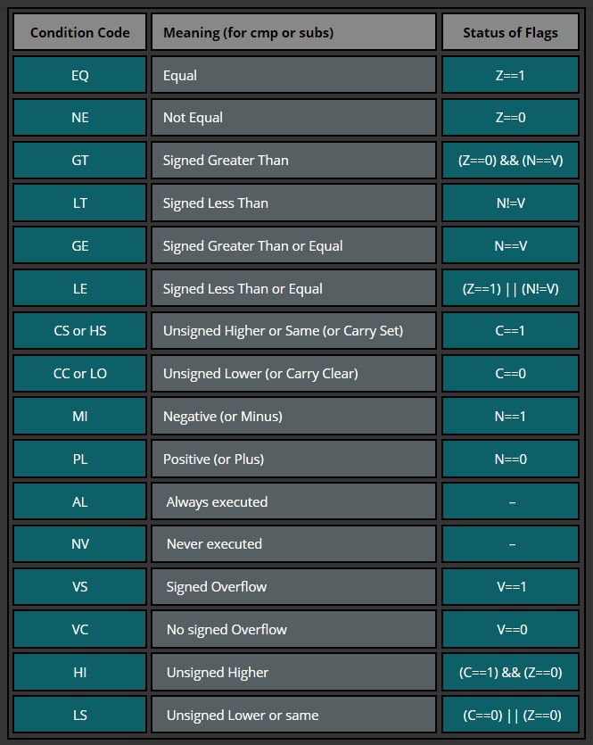
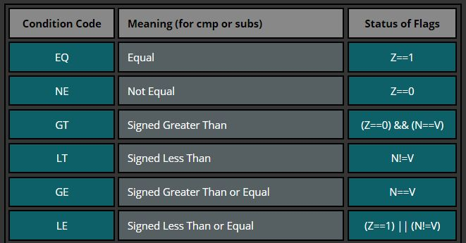

- Although we can change the
program flow with
the branch instruction,
we still need a
mechanism to
make choices in order to
implement
the if and
the while statement !!
- We will study
2 assembler instructions first:
- The compare instruction
that compares (= subtracts)
2 values
- The conditional branch instructions (plural !) that use the summary result of a compare instruction to decide if the branch should be "taken" or "not taken".
- The compare instruction
that compares (= subtracts)
2 values
- The Compare Instruction
of the ARM processor has the following
syntax:
cmp srcReg, op Computes the difference srcReg − op and sets the status flags (N,Z,V,C) according to the outcome of the subtraction You can use as op: 1. a register 2. a small constant (between -1000 and 1000) The effect of a subtraction is to compare the value in register srcReg against the value specified by op The register srcReg is NOT updated by the compare instruction ! Only the N,Z,V,C flags are updated
- When you
compare 2 values x and y,
the
ARM processor
will actually
subtract the
values
(i.e., computes: x - y)
and the ARM processor will then
set the
condition flags according to
the result
of the subtraction.
- Here is a program that illustrate the effect of CMP:
// File: /home/cs255001/demo/asm/6-if/cmp.s main: mov r0, #10 // r0 = 10 // Compare 2 equal values: check the flags !!! cmp r0, #10 // N=0, Z=1, C=1, V=0 // Compare against a smaller value: check the flags !!! cmp r0, #6 // N=0,Z=0,C=1,V=0 // Compare against a larger value: check the flags !!! cmp r0, #16 // N=1,Z=0,C=0,V=0Look carefully at the flags when you run the program.
- You do not need to know
how the
NZVC flag bits are
changed by the
cmp instruction -
that is too much detail
- The only fact I want yo
to take away from this demo program
is:
- The flags are
changed to
reflect the
result of the
subtraction
- The setting of the flags contains enough information for the processor to determine which value in the cmp instruction was larger, smaller or equal !!!
- The flags are
changed to
reflect the
result of the
subtraction
- Note:
- The
cmp instruction by itself
is not doing much (it only set flags...).
You will only appreciate its power when the cmp instruction is followed by a conditional branch/jump instruction ! (discussed next)
- You do not need to know
how the
NZVC flag bits are
changed by the
cmp instruction -
that is too much detail
- There are 16
branch conditions possible in
(ARM) assembler programming:
 BUT only 6 of them are relevant to compare signed values:
 We will only study (and use) these 6 conditional branch instructions:
beq - branch on equal condition bne - branch on not equal condition bgt - branch on greater than condition blt - branch on less than condition bge - branch on greater than or equal condition ble - branch on less than or equal condition
All the conditional branch instructions operate the same way.
I will discuss one of them in details first, and then the other 5 will be described just briefly.
- I will use
"Branch if LESS THAN" (BLT)
for the discussion:
blt label If the status flags, at the moment that this instruction is executed, indicates that the cmp operation resulted in a "LESS THAN" condition, the CPU will "branch" or "jump" to the instruction marked by label If the status flags indicates the otherwise (i.e., "NOT LESS THAN"), then the CPU will continue the execution with the next instruction (i.e., the instruction that follows the blt instruction) - Example:
mov r0, #5 // r0 = 5 - try changing this to 15 // Compare 2 values... cmp r0, #10 blt there // Branch to label "there" if r0 < 10 mov r1, #4444 mov r2, #4444 mov r3, #4444 there: mov r4, #4444 mov r5, #4444 mov r6, #4444Effect of the "blt there" instruction in this program is as follows:
- If the value in
register r0
is less than 10,
the
"blt there"
instruction will make the CPU jump
to the memory location
marked by
the "there" label
The program execution will jump to the mov r4, #4444 is at, and continue the program execution from that point onward (and it will not return back where it came from).
- If the value in register r0 is greater than or equal to 10, the "blt there" instruction does nothing at all (since condition is false) and the CPU will continue the program execution with the next instruction which is mov r1, #4444
- If the value in
register r0
is less than 10,
the
"blt there"
instruction will make the CPU jump
to the memory location
marked by
the "there" label
- Example Program:
(Demo above code)

- Prog file: /home/cs255001/demo/asm/6-if/blt.s
How to run the program:
- To compile: as255 blt
- To run: use EGTAPI
Try changing the instruction mov r0, #5 to mov r0, #15 and run the program again - it will not branch in this case !!!
- Importan note:
- Be very careful
with the order
of the operands in
the cmp instruction !
This sequence of assembler code:
cmp r0, r1 blt therewill branch to the label there if r0 < r1
But:
cmp r1, r0 blt therewill branch to the label there if r1 < r0 (i.e.: r0 > r1 - greater than !!!)
So don't put use registers in the wrong order !!!
- Be very careful
with the order
of the operands in
the cmp instruction !
- Here is the list of all 6 conditional branches in ARM:
- beq:
branch if condition flags indicate last
cmp instruction
resulted in the
equal condition (this one is easy:
the Z flag is set !)
bne: branch if condition flags indicate last cmp instruction resulted in the not equal condition (this one is easy: the Z flag is reset !)
- blt:
branch if condition flags indicate last
cmp instruction
resulted in the less than condition
- ble:
branch if condition flags indicate last
cmp
instruction
resulted in the less than or equal
condition
- bgt:
branch if condition flags indicate last
cmp instruction
resulted in the greater than
condition
- bge: branch if condition flags indicate last cmp instruction resulted in the greater than or equal condition
- beq:
branch if condition flags indicate last
cmp instruction
resulted in the
equal condition (this one is easy:
the Z flag is set !)
- And then there is one
unconditional branch instruction in
ARM:
- b or bal: branch always
- Note:
- You know all there is to know
about assembler instructions
to write
"if",
"if-else",
"while",
"for" and
"do-while"
control statements in any high level programming language !!!
But doing it corrrectly requires that you understand what is going on when each of these control statements are executed.
I.e.: you need to understand the flow of control of the program
We will examine each control statement and give the "blue print" on how the control statement can be translated into assembler code.
- You know all there is to know
about assembler instructions
to write
"if",
"if-else",
"while",
"for" and
"do-while"
control statements in any high level programming language !!!